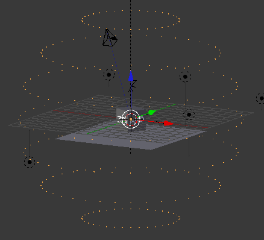
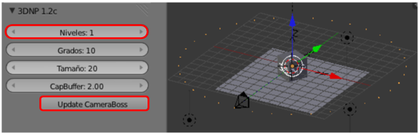
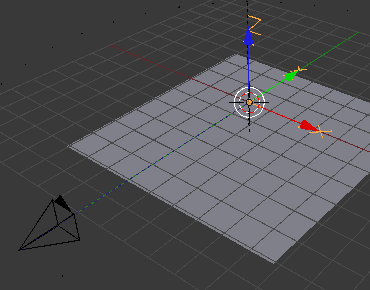

El artilugio
¿Qué es todo eso que aparece en la escena por defecto?. Vamos poco a poco.
Lo que hace 3DNP es obligar a la cámara a desplazarse haciendo círculos alrededor de un objeto mientras crea los renders correspondientes y así fabricar una ilusión del movimiento.
Si nos fijamos hay una especie de esfera formada por unos vértices. Ese objeto se puede seleccionar como cualquier otro objeto en Blender.
Los distintos puntos marcan las posiciones que irá tomando la cámara en su recorrido haciendo renders. Es lo que en 3DNP se llaman Niveles y que nosotros aquí vamos a limitar a 1 (es necesario refrescar pulsando el botón Update CameraBoss).
No vamos a cambiar nada más pero conviene tener presente:
- Grados. Ángulo entre posición y posición en la circunferencia de cada Nivel.
- Tamaño. Se refiere a la esfera que delimita la trayectoria de la cámara
- CapBuffer. Distancia entre el primer y el último Nivel. Esto no afecta al tamaño de la esfera pero ajusta automáticamente la distancia entre todos los Niveles.
La cámara
La configuración de la cámara no es muy especial. Lo único interesante es que si eliminamos el cubo y los textos que vienen de ejemplo se hace visible un objeto Vacío.
La cámara está conectada a ese Vacío con una línea de puntos que representa la relación que tiene con él: esté donde esté la cámara siempre apuntará a ese objeto.
Esto quiere decir que cuando traigamos nuestro objeto desde otro .blend deberemos colocarlo teniendo en cuenta ese detalle.